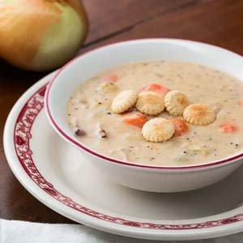
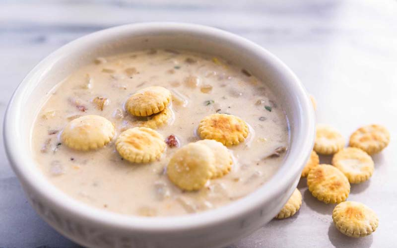

International Dishes Recipe 3:
Clam Chowder
- Dish Description:
- Clam chowder is any of several chowder soups in American cuisine containing clams. In addition to clams, common ingredients include diced potatoes, salt pork, and onions. Other vegetables are not typically used. It is believed that clams were used in chowder because of the relative ease of harvesting them. Clam chowder is usually served with saltine crackers or small, hexagonal oyster crackers. The dish originated in the Eastern United States, but is now commonly served in restaurants throughout the country. Many regional variations exist, but the three most prevalent are New England or "white" clam chowder, which includes milk or cream, Manhattan or "red" clam chowder, which includes tomatoes, and Rhode Island or "clear" clam chowder, which omits both.

Ingredients:
- 3 (6.5 ounce) cans minced clams
- 1 cup minced onion
- 1 cup diced celery
- 2 cups cubed potatoes
- 1 cup diced carrots
- 3/4 cup butter
- 3/4 cup all-purpose flour
- 1 quart half-and-half cream
- 2 tablespoons red wine vinegar
- 1 1/2 teaspoons salt
- ground black pepper to taste
Directions:
- Drain juice from clams into a large skillet over the onions, celery, potatoes and carrots.
- Add water to cover, and cook over medium heat until tender.
- Meanwhile, in a large, heavy saucepan, melt the butter over medium heat.
- Whisk in flour until smooth. Whisk in cream and stir constantly until thick and smooth.
- Stir in vegetables and clam juice. Heat through, but do not boil.
- Stir in clams just before serving. If they cook too much they get tough.
- When clams are heated through, stir in vinegar, and season with salt and pepper.